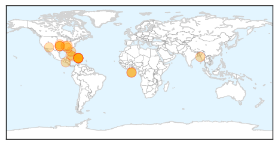

Chikungunya
30-Day Web Trend
12 alerts, 1 warnings

30-Day Twitter Trend
0 alerts, 0 warnings

Article Locations
Article Confidences

Top Articles:
- 1.000
- Chikungunya virus spreads through Caribbean to Cuba
- 0.999
- Tennessee confirms 2nd chikungunya case in Knoxville area
- 0.999
- Mosquito-borne chikungunya virus spreads to Cuba
- 0.999
- Chikungunya Virus Keeps Spreading To Various Parts Of Caribbean And Florida
- 0.998
- Six cases of chikungunya confirmed in Cuba
- 0.998
- Chikungunya virus spreads in Americas, enters U.S. via travelers
- 0.998
- First Oklahoma case of chikungunya confirmed in traveler
- 0.998
- First Oklahoma case of chikungunya confirmed in traveler
- 0.998
- 2 Cases of Mosquito-borne Virus Chikungunya Reported in Florida
- 0.997
- 6 Cases of Chikungunya Virus Confirmed in Cuba
- 0.997
- New Virus Spikes in the Islands
- 0.995
- U.S. Travelers Return Home With Tropical Disease. Will It Spread in the States?
- 0.995
- Tennessee confirms 2nd chikungunya case
- 0.995
- Health officials monitor U.S. cases of mosquito-borne illness ch
- 0.992
- First Oklahoma case of chikungunya virus confirmed
- 0.992
- Threatening mosquito virus is making a come back - Story
- 0.990
- The Oklahoma Department of Health confirms chikungunya virus case in Tulsa
- 0.982
- Chikungunya virus found in Leon County
- 0.977
- Cuba imports chikungunya cases from Haiti, DR
- 0.962
- Chikungunya Virus Present In Leon County
- 0.954
- Arizona at risk for new mosquito virus
- 0.942
- Tulsa County resident who traveled to Haiti has state's first case of chikungunya virus
- 0.858
- Warnings issued after mosquito-borne chikungunya virus confirmed in Georgia
Top Tweets:
-
No tweets found for Jun 19, 2014
Ebola
30-Day Web Trend
8 alerts, 0 warnings

30-Day Twitter Trend
0 alerts, 0 warnings

Article Locations

Article Confidences

Top Articles:
- 1.000
- West Africa Ebola death toll hits 337
- 1.000
- There is no known cure or vaccine for Ebola
- 1.000
- Guinea frets as Ebola virus spreads
- 1.000
- West Africa Ebola Death Toll Hits 337 — Naharnet
- 1.000
- Doctors Aren't Sure How To Stop Africa's Deadliest Ebola Outbreak
- 1.000
- Guinea frets as Ebola virus spreads
- 1.000
- Ghana, Business Advice, Jobs, News, Business Directory, Real Estate, Finance, Forms, Auto
- 1.000
- Australian doctor fights virus
- 1.000
- West Africa Ebola death toll hits 337 - News
- 1.000
- Doctors Aren't Sure How To Stop Africa's Deadliest Ebola Outbreak
- 0.999
- What Happens to Your Body When You Get Ebola?
- 0.999
- West Africa ebola pandemic escalates with Sierra Leone deaths 19/06/2014
- 0.998
- Ebola Death Toll in Liberia Hits 16, Guinea 264, Sierra Leone 49
- 0.998
- Ebola in Sierra Leone: Which doctor?
- 0.998
- Kasolo: ′We must help communities understand Ebola′
- 0.988
- Kenema Matron calls for support to tackle Ebola « Awoko Newspaper
- 0.891
- Nurses worry over Ebola Ward location BGH « Awoko Newspaper
- 0.795
- SLPP MP Delivers Protective Clothes & Chlorine to Daru
- 0.714
- Miatta Kargbo Stuns the World
- 0.652
- Anthrax scare is latest safety lapse at CDC labs
Top Tweets:
-
No tweets found for Jun 19, 2014